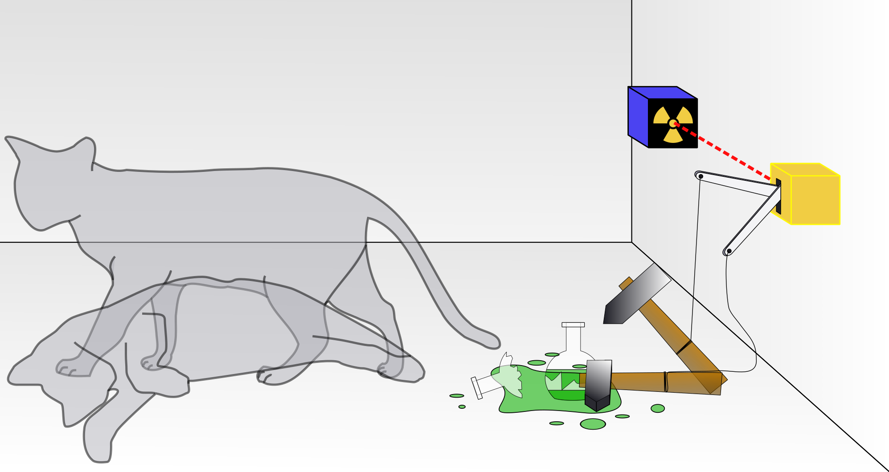

Cats in the lives of famous scientists have
varied from being sources of comfort to inspiring curiousity.
Rarely is the cat a symbol for an important scientific
concept like Schrödinger's cat.
Yes indeed! Erwin Schrödinger, though
famously associated with "Schrödinger's cat,"
never owned a cat, nor did the thought experiment
stem from any personal experience with one.
The "cat" in his theoretical scenario was simply
a conceptual device used to highlight the bizarre
and counterintuitive implications of quantum
mechanics, particularly the idea of superposition
and the role of observation in determining the
state of a system.
The
Schrödinger's Cat Thought Experiment:
The thought experiment imagines a scenario in
which a cat is placed in a sealed box containing a
radioactive atom, a Geiger counter, poison, and a
hammer. If the atom decays, the Geiger counter
triggers the hammer to release the poison, killing
the cat. If the atom does not decay, the cat
remains alive.
According to quantum mechanics, the atom is in a
superposition of decayed and not decayed until
observed, meaning the cat, being tied to the
atom’s fate, is simultaneously alive and
dead. Only when the box is opened does the
cat’s state "collapse" into either alive or
dead.

The Purpose:
Schrödinger
developed this paradox in 1935 as a critique of
the Copenhagen interpretation of quantum
mechanics. This interpretation suggests that a
quantum particle, like an atom, can exist in all
possible states simultaneously until it is
measured or observed. Schrödinger sought to
demonstrate how absurd this principle might seem
when applied to larger, tangible objects in the
macroscopic world, such as a cat.
Above is a very simplifed example of showcase of
the experiment. Schrödinger cat
exemplifies how weird quantum mechanics can be
when it comes to observation and reality in a
memorable way!
Why Schrödinger's
Cat is Famous Today:
Schrödinger's
purpose was not to propose a realistic experiment
but to underline the philosophical and
interpretational challenges in quantum physics.
While the paradox seems strange, it effectively
illustrates how quantum mechanics defies classical
logic when applied to the macroscopic world.
Over time, the cat has
become a widely recognized symbol of quantum
physics and its mysteries, though it remains a
metaphor rather than a real-life anecdote.